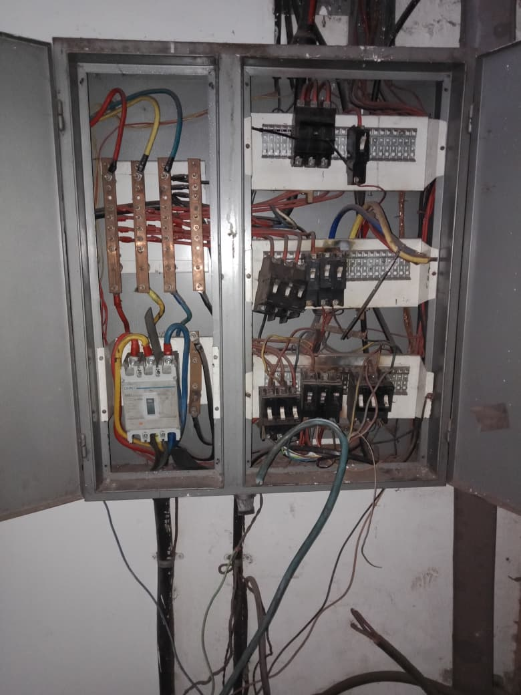

Clergy Mandizvidza
Engineering excellence, technical mastery, and hands‑on field experience.
Mechanical and fluid‑handling engineering work covering installation, alignment, plumbing, and maintenance of high‑capacity submersible pumps, pressure tanks, booster systems, and municipal water distribution pipelines.
Context: Rural community in Gokwe requiring a reliable water supply for households, livestock, and small‑scale agriculture.
Problem: The existing borehole system was unreliable due to inconsistent grid power and high diesel costs for pumping. Water availability was unstable, affecting daily community needs.
Actions:
Outcome: Delivered a fully off‑grid, stable water supply system with zero fuel cost, improved reliability, and increased daily water output for the community.


Context: A household in Bulawayo required a reliable, off‑grid water supply due to frequent municipal water cuts and low pressure.
Problem: The existing borehole system was underperforming because of unstable grid power, pump inefficiency, and lack of proper solar integration.
Actions:
Outcome: Delivered a stable, fuel‑free water supply system capable of meeting daily household needs, reducing reliance on municipal water, and improving overall water security.


Context: A community in Bulawayo required a dependable water supply for households, gardens, livestock, and small‑scale farming. Municipal water shortages and low pressure made daily access unreliable.
Problem: The existing borehole system could not operate consistently due to unstable grid power, high diesel costs, and an undersized pressure tank setup. Water availability was unpredictable, affecting the entire community.
Actions:
Outcome: Delivered a reliable, off‑grid water system capable of supporting an entire community. The installation reduced water shortages, eliminated fuel costs, and provided consistent daily water access.


Field deployment of decentralized solar PV systems, hybrid inverter configuration, battery storage integration, and electrical protection commissioning for residential, commercial, and institutional clients.
Context: A residential property in Harare required a fully independent solar‑powered energy system capable of supporting household loads, refrigeration, lighting, and small appliances during frequent grid outages.
Problem: The home experienced unstable grid supply and long periods without electricity. The existing backup system was undersized and could not sustain essential loads overnight.
Actions:
Outcome: Delivered a robust, off‑grid capable solar system providing uninterrupted power, reduced electricity costs, and reliable overnight energy storage.


Context: A rural household in Chiredzi required a fully off‑grid energy solution due to unreliable grid supply, frequent outages, and the need for stable power for lighting, refrigeration, and household appliances.
Problem: The existing backup system was undersized and could not sustain essential loads overnight. The house had outdated wiring and no proper tubing for safe cable routing.
Actions:
Outcome: Delivered a reliable off‑grid solar system capable of powering household essentials throughout the night.


Context: A household in Bindura required a dependable off‑grid power solution due to frequent outages and unstable grid voltage affecting daily living and small appliances.
Problem: The home had no reliable backup system, and the existing wiring was outdated, lacking proper tubing and safe cable routing.
Actions:
Outcome: Delivered a stable off‑grid solar system capable of powering essential household loads throughout the night.


Context: A residential property in Harare required a high‑capacity on‑grid solar system to support household loads, refrigeration, lighting, and small appliances during prolonged grid outages.
Problem: The home experienced unstable grid voltage and frequent power cuts. The existing backup system was undersized, and the house wiring lacked proper tubing and safe cable routing.
Actions:
Outcome: Delivered a robust on‑grid solar system capable of powering essential household loads throughout the night.


Context: Nyazura Boarding School required a stable and cost‑effective energy solution to support classrooms, dormitories, administration offices, and essential school facilities during frequent grid fluctuations.
Problem: The school experienced unstable grid voltage, periodic outages, and high electricity costs. Critical areas such as computer labs and refrigeration needed uninterrupted power.
Actions:
Outcome: Delivered a reliable on‑grid solar system capable of powering essential school facilities during outages.


Industrial electrical engineering work involving 400V three‑phase distribution, VSD integration, motor control circuits, safe isolation (LOTO), and corrective maintenance.
Context: A manufacturing factory in Harare required a complete rewiring of its three‑phase distribution board to improve electrical safety, load balancing, and equipment reliability.
Problem: The existing DB had worn terminations, incorrect phase sequencing, overloaded breakers, and poor cable management. These issues caused intermittent tripping and posed safety risks for machinery operators.
Actions:
Outcome: Delivered a clean, safe, and fully compliant three‑phase distribution board. The factory achieved improved electrical stability, reduced downtime, and enhanced protection for industrial machinery.



Context: A manufacturing factory in Harare required urgent repairs on multiple three‑phase motors, Variable Speed Drives (VSDs), and motor control panels to restore production efficiency and eliminate downtime.
Problem: The factory experienced frequent motor tripping, overheating, unstable speed control, and intermittent VSD faults. Poor wiring, worn terminals, and incorrect control logic caused machinery stoppages and reduced output.
Actions:
Outcome: Restored stable motor operation, eliminated VSD faults, and improved production reliability. The factory achieved reduced downtime, safer electrical operation, and consistent machine performance.


Context: A manufacturing factory in Harare required a new Variable Speed Drive (VSD) installation on a production pump, along with a dedicated isolator for safe maintenance and operational control.
Problem: The existing pump system lacked proper speed control and had no safe isolation point. Operators experienced inconsistent flow rates, overheating, and unsafe manual shutdown procedures.
Actions:
Outcome: Delivered a stable, efficient, and safe pump control system. The factory achieved improved flow regulation, reduced motor stress, and enhanced operator safety through proper isolation.


Heavy machinery installation, conveyor systems, welding, industrial plant operations, and large‑scale engineering projects across manufacturing and power‑generation environments.
Context: A mining operation in Shamva required installation of a new conveyor belt system to improve material handling efficiency, along with urgent repairs on a mill used for ore processing.
Problem: The existing conveyor system had mechanical failures, misalignment, and worn rollers causing frequent stoppages. The mill had damaged components, reduced grinding efficiency, and unsafe vibration levels.
Actions:
Outcome: Delivered a fully operational conveyor belt system and restored mill functionality. The mine achieved improved material flow, reduced downtime, and safer mechanical operation.


Context: Kuwadzana Major Park required a sustainable water‑efficient agricultural setup to support community gardening, fish production, and small‑scale horticulture.
Problem: The existing manual watering system was inefficient, wasting water and limiting crop growth. The community also needed an integrated aquaponics system to improve food production and reduce operational costs.
Actions:
Outcome: Delivered a fully functional aquaponics and drip irrigation system that significantly reduced water usage, improved crop yield, and supported sustainable community agriculture.


High‑risk field operations involving pole climbing, line inspection, safety briefings, and maintenance of overhead electrical infrastructure.
Context: Field operations required skilled line work, pole climbing, and maintenance of overhead power distribution infrastructure to ensure reliable electricity supply for rural and urban communities.
Problem: Several sections of the overhead network had damaged poles, worn conductors, and unstable line structures. Routine inspections revealed safety risks, voltage drops, and potential outages if corrective work was not completed.
Actions:
Outcome: Restored safe and stable overhead power distribution. The field team improved network reliability, reduced outage risks, and ensured compliance with electrical safety standards.